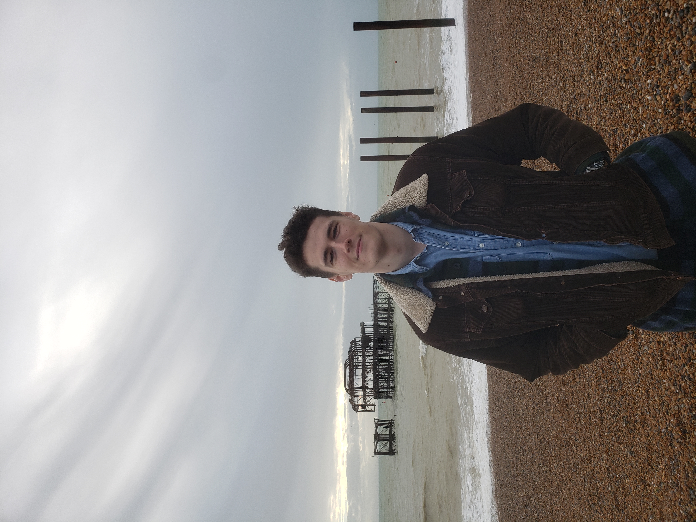

Elliot McKinnon-Gray
Atmospheric dynamics, predictability and energy transfer across scales.

I am a final year PhD student in the Department of Meteorology at the University of Reading. My interests are in dynamical meteorology, particularly in the tropics; high resolution (kilometre-scale) atmospheric modelling; and understanding how energy is transferred across spatial scales.
My first degree was an MSci in Meteorology and Oceanography from the University of East Anglia. In 2019 I moved to the University of Hamburg and worked as a research assistant in the Atmospheric Dynamics Group. From 2021 to 2023 I worked in commercial software based in my hometown of Brighton.
My overarching research goals straddle the questions of forecast error growth in different regions of the planet and how this relates to interscale energy transfer and the representation and parameterization of fundamental atmospheric processes, such as deep convection.